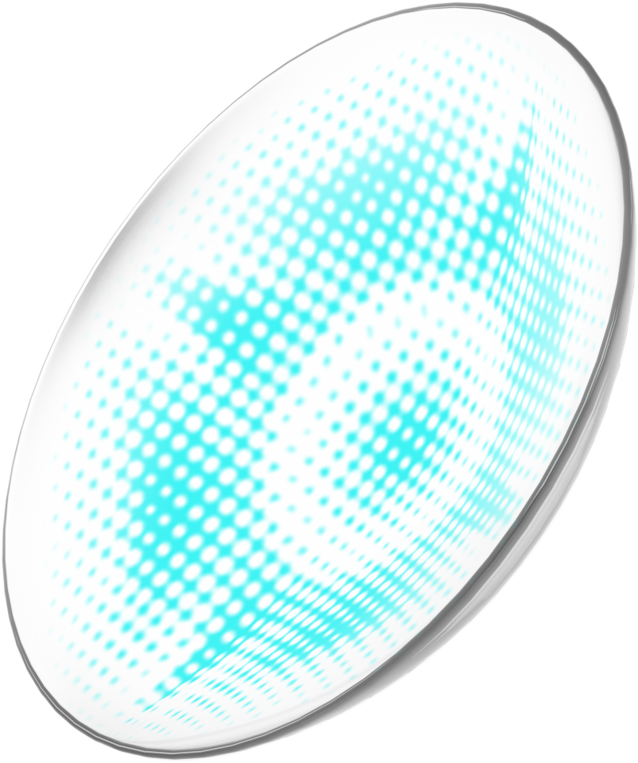

Interviewee nn
저한테는 음악 듣기가 저만의 소소한 행복이자 아주 즐거운 취미예요.
편하게 핸드폰으로 스트리밍해서 듣는 것도 좋지만, 피지컬(실물) 음반을 사
모으는 것도 너무 재미 있더라고요. 음반을 구매함으로써, 좋아하는 아티스트가
들려주는 음악에 대해 제가 표할 수 있는 작은 감사의 표현이 될 수 있어서
좋기도 하고, 무형의 음악 외에 함께 표현된 앨범 아트를 감상하거나, 딸려오는
굿즈를 갖게 되면, 뭔가 그 음악을 더 잘 이해하고 소유하게 되는 느낌이 들어서
좋아요. 그래서 처음에는 CD가 가장 보편적이니까 CD 위주로 모으다가, 최근
들어 LP와 카세트 테이프도 함께 수집하게 되었어요. 요즘 특별하게 한정반으로
나오는 LP가 굉장히 많거든요. 문제는 이 ‘한정’이라는 단어에 혹해서 평소에
그렇게 관심 갖지 않던 앨범도 사게 된다는 점... 충동구매 경험 정말 많아요.
자연스럽게 턴테이블과 카세트 테이프 플레이어도 당연히 샀고요.
그런데 다른 사람들한테 제 취미를 이야기하면, 음악을 담는 틀만 다르고, 내용물은
똑같은데 왜 그렇게 다 모으는거냐는 질문도 되게 많이 해요. 솔직히 맞는
말이긴 한데.. (웃음) 각각의 감성과 시각적인 즐거움이 다르다고 하면 이해가 될까요?
Interviewee nn
어저구저저구 편하게 핸드폰으로 스트리밍해서 듣는 것도 좋지만, 피지컬(실물) 음반을 사
모으는 것도 너무 재미 있더라고요. 음반을 구매함으로써, 좋아하는 아티스트가
들려주는 음악에 대해 제가 표할 수 있는 작은 감사의 표현이 될 수 있어서
좋기도 하고, 무형의 음악 외에 함께 표현된 앨범 아트를 감상하거나, 딸려오는
굿즈를 갖게 되면, 뭔가 그 음악을 더 잘 이해하고 소유하게 되는 느낌이 들어서
좋아요. 그래서 처음에는 CD가 가장 보편적이니까 CD 위주로 모으다가, 최근
들어 LP와 카세트 테이프도 함께 수집하게 되었어요. 요즘 특별하게 한정반으로
나오는 LP가 굉장히 많거든요. 문제는 이 ‘한정’이라는 단어에 혹해서 평소에
그렇게 관심 갖지 않던 앨범도 사게 된다는 점... 충동구매 경험
본 사이트는
데스크톱 환경에서 감상하실 수 있습니다. Please view this site on PC.
데스크톱 환경에서 감상하실 수 있습니다. Please view this site on PC.